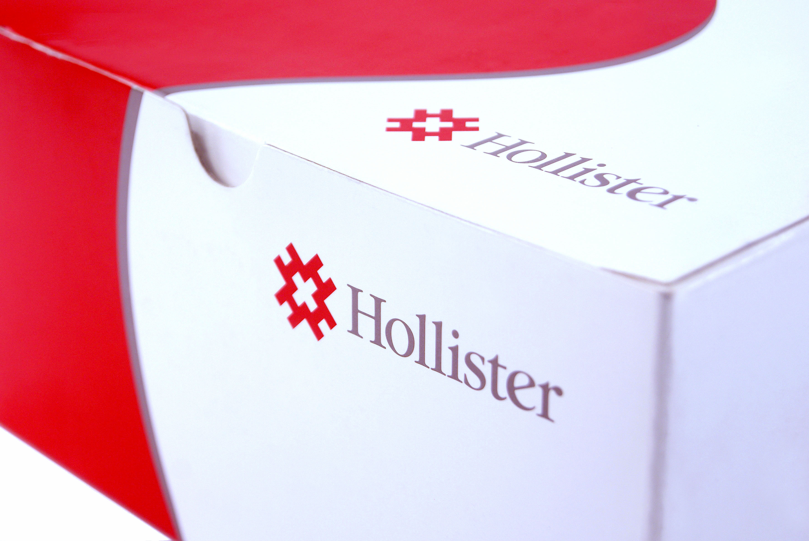
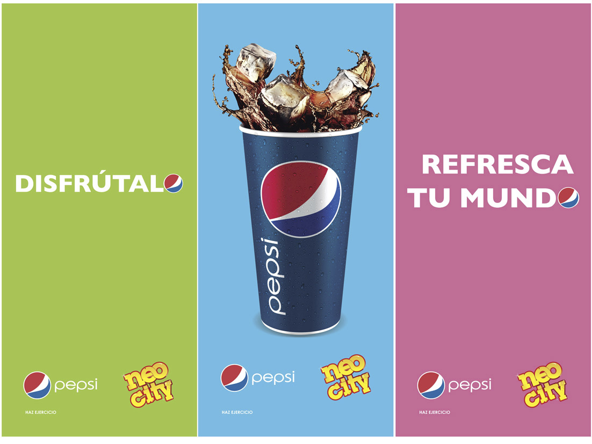

Nuestro trabajo
- 
- 

Como parte de una estrategia integral, Strategy ofrece los servicios de marketing para dar un soporte o un racional al desarrollo de marcas.
Learn MorePara Strategy no es solamente diseño, sino que es un concepto de comunicación estratégica integral. Nuestra estructura y experiencia nos permiten planear con nuestros clientes las diferentes etapas del proceso estratégico.
Learn MorePara una optima toma de decisión en un tiempo efectivo, Technology & Intelligence es la base de información de su negocio donde por medio de apps o bases de datos desarrolladas por nosotros logramos informes detallados sobre el estado de las marcas con miras a mejorar el desarrollo de las mismas.
Learn MoreEscribemos un mensaje para tener el placer de atenderte, nosotros te responderemos en el menor tiempo posible.
Escribeme un mensaje